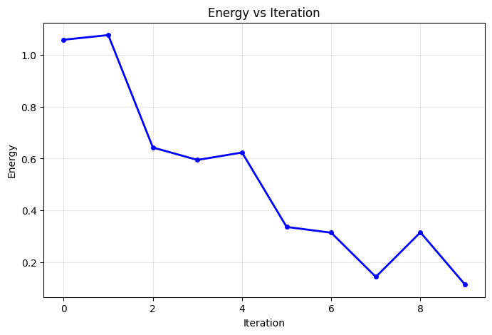
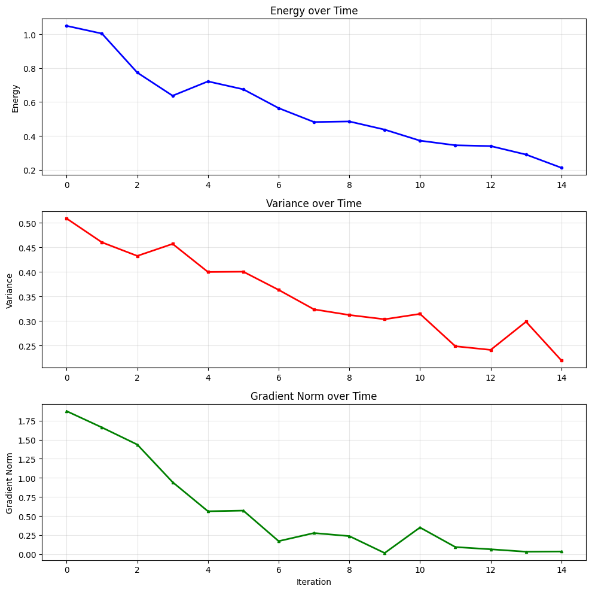
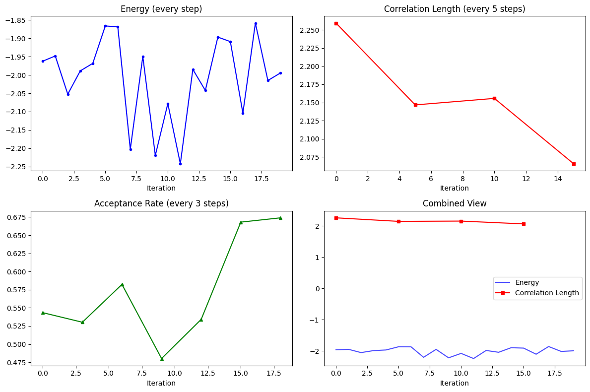
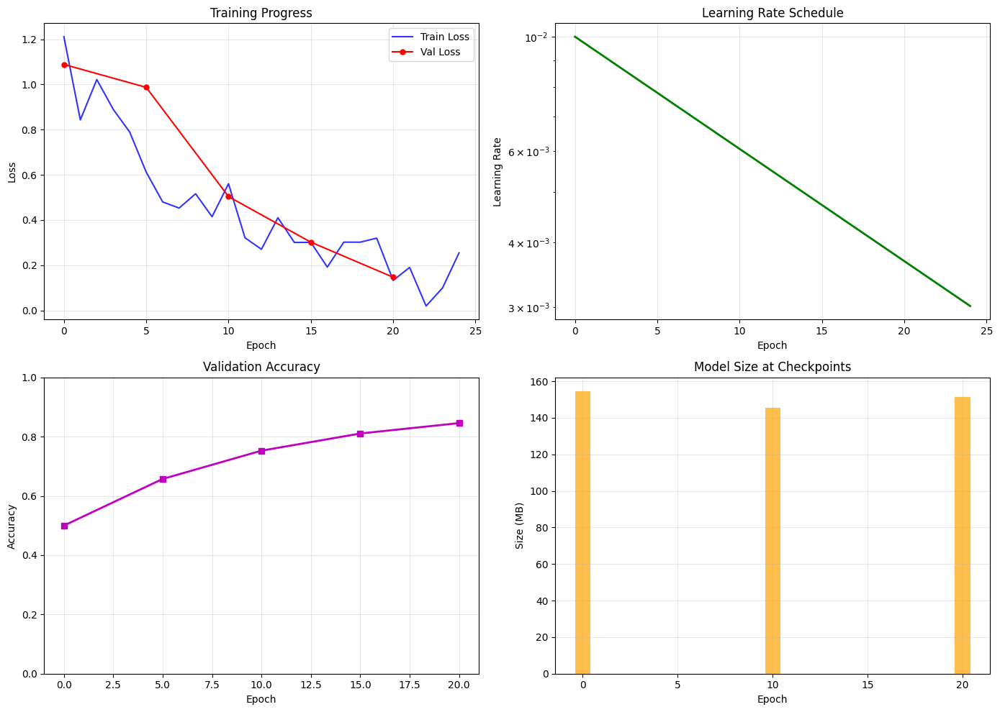

Time-series data with History and HistoryDict#
NetKet provides powerful classes for storing and managing time-series data through the netket.utils.history.History and netket.utils.history.HistoryDict classes. These are particularly useful for tracking optimization progress, storing simulation results, and managing logging data.
This tutorial will show you how to:
Create and manipulate
HistoryobjectsUse
HistoryDictfor managing multiple time-seriesSave and load history data
Use logging utilities like
RuntimeLogfor easy data collection
import numpy as np
import matplotlib.pyplot as plt
import tempfile
import os
import netket as nk
from netket.utils import history
from netket.logging import RuntimeLog
Working with History Objects#
The History class is designed to store time-series data with associated iteration numbers. Let’s start with basic usage:
# Create an empty history object
hist = history.History()
print(f"Empty history: {hist}")
print(f"Length: {len(hist)}")
Empty history: History(keys=['value'], n_iters=0)
Length: 0
Building History Objects in a Loop#
History objects are designed to be built incrementally, which is perfect for optimization loops:
# Simulate an optimization loop with data
steps = list(range(10))
energies = [1.0 * np.exp(-step * 0.2) + 0.1 * np.random.randn() for step in steps]
# Create History object with initial data
energy_history = history.History({'energy': energies}, iters=steps)
print(f"History after creation: {energy_history}")
print(f"Iterations: {energy_history.iters}")
print(f"Energy values: {energy_history['energy']}")
History after creation: History(keys=['energy'], n_iters=10)
Iterations: [0 1 2 3 4 5 6 7 8 9]
Energy values: [1.05901467 1.07698539 0.64250923 0.59448121 0.62322185 0.33553292
0.31330107 0.14264381 0.31478527 0.11293369]
Plotting History Data#
History objects have built-in plotting capabilities:
# Plot the energy history manually
fig, ax = plt.subplots(figsize=(8, 5))
ax.plot(energy_history.iters, energy_history['energy'], 'b-o', linewidth=2, markersize=4)
ax.set_xlabel('Iteration')
ax.set_ylabel('Energy')
ax.set_title('Energy vs Iteration')
ax.grid(True, alpha=0.3)
plt.show()

Creating History with Multiple Keys#
A single History object can store multiple time-series with the same time axis:
# Create a history with multiple metrics
steps = list(range(15))
energies = [1.0 * np.exp(-step * 0.1) + 0.05 * np.random.randn() for step in steps]
variances = [0.5 * np.exp(-step * 0.05) + 0.02 * np.random.randn() for step in steps]
grad_norms = [2.0 * np.exp(-step * 0.3) + 0.1 * np.random.randn() for step in steps]
multi_history = history.History({
'energy': energies,
'variance': variances,
'gradient_norm': grad_norms
}, iters=steps)
print(f"Multi-metric history: {multi_history}")
print(f"Keys: {multi_history.keys()}")
Multi-metric history: History(keys=['energy', 'variance', 'gradient_norm'], n_iters=15)
Keys: ['energy', 'variance', 'gradient_norm']
# Plot all metrics manually
fig, axes = plt.subplots(3, 1, figsize=(10, 10))
# Plot each metric
axes[0].plot(multi_history.iters, multi_history['energy'], 'b-o', linewidth=2, markersize=3, label='Energy')
axes[0].set_ylabel('Energy')
axes[0].set_title('Energy over Time')
axes[0].grid(True, alpha=0.3)
axes[1].plot(multi_history.iters, multi_history['variance'], 'r-s', linewidth=2, markersize=3, label='Variance')
axes[1].set_ylabel('Variance')
axes[1].set_title('Variance over Time')
axes[1].grid(True, alpha=0.3)
axes[2].plot(multi_history.iters, multi_history['gradient_norm'], 'g-^', linewidth=2, markersize=3, label='Gradient Norm')
axes[2].set_ylabel('Gradient Norm')
axes[2].set_xlabel('Iteration')
axes[2].set_title('Gradient Norm over Time')
axes[2].grid(True, alpha=0.3)
plt.tight_layout()
plt.show()

Concatenating History Objects#
You can concatenate History objects together:
# Create two separate history segments with working data
steps1 = list(range(5))
loss1 = [2.0 - step * 0.2 for step in steps1]
hist1 = history.History({'loss': loss1}, iters=steps1)
steps2 = list(range(5, 10))
loss2 = [2.0 - step * 0.2 for step in steps2]
hist2 = history.History({'loss': loss2}, iters=steps2)
print(f"First segment: {hist1}")
print(f"Second segment: {hist2}")
# Concatenate
hist1.append(hist2)
print(f"Concatenated: {hist1}")
First segment: History(keys=['loss'], n_iters=5)
Second segment: History(keys=['loss'], n_iters=5)
Concatenated: History(keys=['loss'], n_iters=10)
Working with HistoryDict#
HistoryDict is a powerful container that can store multiple History objects or nested dictionaries. Each value can be logged at independent iterations, making it perfect for complex simulations where different metrics are computed at different frequencies.
Using accum_histories_in_tree for HistoryDict Construction#
The accum_histories_in_tree() function is the recommended way to build complex nested history structures:
# Start with an empty HistoryDict
history_dict = history.HistoryDict()
# Simulate a complex optimization with nested metrics
for step in range(20):
# Core metrics computed every step
data = {
'energy': -2.0 + 0.1 * np.random.randn(),
'variance': 0.5 + 0.05 * np.random.randn()
}
# Expensive metrics computed every 5 steps
if step % 5 == 0:
data['expensive_metrics'] = {
'correlation_length': 2.0 + 0.2 * np.random.randn(),
'entanglement_entropy': 1.5 + 0.1 * np.random.randn()
}
# Diagnostic metrics computed every 3 steps
if step % 3 == 0:
data['diagnostics'] = {
'acceptance_rate': 0.5 + 0.1 * np.random.randn(),
'step_size': 0.01 + 0.001 * np.random.randn()
}
# Use accum_histories_in_tree to accumulate the data
history_dict = history.accum_histories_in_tree(history_dict, data, step=step)
print(f"Complex HistoryDict: {history_dict}")
Complex HistoryDict: HistoryDict with 6 elements:
'diagnostics/acceptance_rate' -> History(keys=['value'], n_iters=7)
'diagnostics/step_size' -> History(keys=['value'], n_iters=7)
'energy' -> History(keys=['value'], n_iters=20)
'expensive_metrics/correlation_length' -> History(keys=['value'], n_iters=4)
'expensive_metrics/entanglement_entropy' -> History(keys=['value'], n_iters=4)
'variance' -> History(keys=['value'], n_iters=20)
Accessing Data in HistoryDict#
HistoryDict supports various ways to access nested data:
# Access top-level keys
print(f"Top-level keys: {list(history_dict.keys())}")
# Access nested data using dictionary syntax
print(f"Energy history: {history_dict['energy']}")
print(f"Expensive metrics: {history_dict['expensive_metrics']}")
# Access deeply nested data using path syntax
correlation_history = history_dict['expensive_metrics/correlation_length']
print(f"Correlation length history: {correlation_history}")
# Show that different metrics were logged at different frequencies
print(f"Energy logged at steps: {history_dict['energy'].iters}")
print(f"Correlation length logged at steps: {correlation_history.iters}")
print(f"Acceptance rate logged at steps: {history_dict['diagnostics/acceptance_rate'].iters}")
Top-level keys: ['energy', 'variance', 'expensive_metrics', 'diagnostics']
Energy history: History(keys=['value'], n_iters=20)
Expensive metrics: HistoryDict with 2 elements:
'correlation_length' -> History(keys=['value'], n_iters=4)
'entanglement_entropy' -> History(keys=['value'], n_iters=4)
Correlation length history: History(keys=['value'], n_iters=4)
Energy logged at steps: [ 0 1 2 3 4 5 6 7 8 9 10 11 12 13 14 15 16 17 18 19]
Correlation length logged at steps: [ 0 5 10 15]
Acceptance rate logged at steps: [ 0 3 6 9 12 15 18]
Plotting Data from HistoryDict#
# Plot different metrics with different sampling frequencies
fig, axes = plt.subplots(2, 2, figsize=(12, 8))
# Energy (every step)
axes[0, 0].plot(history_dict['energy'].iters, history_dict['energy'].values, 'b-o', markersize=3)
axes[0, 0].set_title('Energy (every step)')
axes[0, 0].set_xlabel('Iteration')
# Correlation length (every 5 steps)
corr_hist = history_dict['expensive_metrics/correlation_length']
axes[0, 1].plot(corr_hist.iters, corr_hist.values, 'r-s', markersize=5)
axes[0, 1].set_title('Correlation Length (every 5 steps)')
axes[0, 1].set_xlabel('Iteration')
# Acceptance rate (every 3 steps)
acc_hist = history_dict['diagnostics/acceptance_rate']
axes[1, 0].plot(acc_hist.iters, acc_hist.values, 'g-^', markersize=4)
axes[1, 0].set_title('Acceptance Rate (every 3 steps)')
axes[1, 0].set_xlabel('Iteration')
# Combined plot
axes[1, 1].plot(history_dict['energy'].iters, history_dict['energy'].values, 'b-', alpha=0.7, label='Energy')
axes[1, 1].plot(corr_hist.iters, corr_hist.values, 'r-s', markersize=4, label='Correlation Length')
axes[1, 1].set_title('Combined View')
axes[1, 1].set_xlabel('Iteration')
axes[1, 1].legend()
plt.tight_layout()
plt.show()

Saving and Loading HistoryDict#
HistoryDict provides convenient methods for saving and loading data:
# Create a temporary file for demonstration
with tempfile.NamedTemporaryFile(mode='w', suffix='.json', delete=False) as tmp_file:
tmp_filename = tmp_file.name
print(f"Saving to temporary file: {tmp_filename}")
# Save the HistoryDict - we'll use RuntimeLog for this
# (HistoryDict itself doesn't have a direct save method, but RuntimeLog does)
runtime_log = RuntimeLog()
runtime_log._data = history_dict
runtime_log.serialize(tmp_filename)
print("Data saved successfully!")
Saving to temporary file: /var/folders/b_/dvph1c6569155bspz2m2sml40000gp/T/tmpnfskv9xu.json
Data saved successfully!
# Load the data back
loaded_history_dict = history.HistoryDict.from_file(tmp_filename)
print(f"Loaded HistoryDict: {loaded_history_dict}")
# Verify the data is the same
print(f"Original energy values: {history_dict['energy'].values[:5]}")
print(f"Loaded energy values: {loaded_history_dict['energy'].values[:5]}")
# Clean up
os.unlink(tmp_filename)
Loaded HistoryDict: HistoryDict with 6 elements:
'diagnostics/acceptance_rate' -> History(keys=['value'], n_iters=7)
'diagnostics/step_size' -> History(keys=['value'], n_iters=7)
'energy' -> History(keys=['value'], n_iters=20)
'expensive_metrics/correlation_length' -> History(keys=['value'], n_iters=4)
'expensive_metrics/entanglement_entropy' -> History(keys=['value'], n_iters=4)
'variance' -> History(keys=['value'], n_iters=20)
Original energy values: [-1.96226202 -1.9480204 -2.05242489 -1.98877341 -1.96826794]
Loaded energy values: [-1.96226202 -1.9480204 -2.05242489 -1.98877341 -1.96826794]
Using RuntimeLog for Easy Data Collection#
The RuntimeLog class provides an even easier way to work with history data. It automatically uses HistoryDict internally and provides a simple interface for logging data in loops.
Basic RuntimeLog Usage#
By passing driver=None to log in a loop, RuntimeLog becomes a simple and powerful logging tool:
# Create a RuntimeLog instance
log = RuntimeLog()
# Simulate a training loop with irregular logging
for epoch in range(25):
# Basic metrics every epoch
metrics = {
'train_loss': 1.0 * np.exp(-epoch * 0.1) + 0.1 * np.random.randn(),
'learning_rate': 0.01 * np.exp(-epoch * 0.05)
}
# Validation metrics every 5 epochs
if epoch % 5 == 0:
metrics['validation'] = {
'val_loss': 1.2 * np.exp(-epoch * 0.08) + 0.15 * np.random.randn(),
'val_accuracy': 0.5 + 0.4 * (1 - np.exp(-epoch * 0.1))
}
# Model checkpointing info every 10 epochs
if epoch % 10 == 0:
metrics['checkpoint'] = {
'model_size_mb': 150 + 5 * np.random.randn(),
'save_time_seconds': 2.5 + 0.5 * np.random.randn()
}
# Log the metrics (note: driver=None is implicit)
log(step=epoch, item=metrics, variational_state=None)
print(f"RuntimeLog contents: {log}")
print(f"Available keys: {list(log.data.keys())}")
RuntimeLog contents: RuntimeLog():
keys = ['train_loss', 'learning_rate', 'validation', 'checkpoint']
Available keys: ['train_loss', 'learning_rate', 'validation', 'checkpoint']
Accessing RuntimeLog Data#
RuntimeLog’s data attribute is a HistoryDict, so you can use all the same access patterns:
# Access the underlying HistoryDict
data = log.data
print(f"Type of log.data: {type(data)}")
# Access different metrics
print(f"Train loss history: {data['train_loss']}")
print(f"Validation loss history: {data['validation/val_loss']}")
print(f"Checkpoint info: {data['checkpoint']}")
# Show different logging frequencies
print(f"\nLogging frequencies:")
print(f"Train loss logged at: {len(data['train_loss'].iters)} steps")
print(f"Validation logged at: {len(data['validation/val_loss'].iters)} steps")
print(f"Checkpoints at: {data['checkpoint/model_size_mb'].iters}")
Type of log.data: <class 'netket.utils.history.history_dict.HistoryDict'>
Train loss history: History(keys=['value'], n_iters=25)
Validation loss history: History(keys=['value'], n_iters=5)
Checkpoint info: HistoryDict with 2 elements:
'model_size_mb' -> History(keys=['value'], n_iters=3)
'save_time_seconds' -> History(keys=['value'], n_iters=3)
Logging frequencies:
Train loss logged at: 25 steps
Validation logged at: 5 steps
Checkpoints at: [ 0 10 20]
Plotting RuntimeLog Data#
# Create a comprehensive plot of the logged data
fig, axes = plt.subplots(2, 2, figsize=(14, 10))
# Training and validation loss
train_loss = data['train_loss']
val_loss = data['validation/val_loss']
axes[0, 0].plot(train_loss.iters, train_loss.values, 'b-', label='Train Loss', alpha=0.8)
axes[0, 0].plot(val_loss.iters, val_loss.values, 'r-o', label='Val Loss', markersize=5)
axes[0, 0].set_title('Training Progress')
axes[0, 0].set_xlabel('Epoch')
axes[0, 0].set_ylabel('Loss')
axes[0, 0].legend()
axes[0, 0].grid(True, alpha=0.3)
# Learning rate
lr_hist = data['learning_rate']
axes[0, 1].plot(lr_hist.iters, lr_hist.values, 'g-', linewidth=2)
axes[0, 1].set_title('Learning Rate Schedule')
axes[0, 1].set_xlabel('Epoch')
axes[0, 1].set_ylabel('Learning Rate')
axes[0, 1].set_yscale('log')
axes[0, 1].grid(True, alpha=0.3)
# Validation accuracy
val_acc = data['validation/val_accuracy']
axes[1, 0].plot(val_acc.iters, val_acc.values, 'm-s', markersize=6, linewidth=2)
axes[1, 0].set_title('Validation Accuracy')
axes[1, 0].set_xlabel('Epoch')
axes[1, 0].set_ylabel('Accuracy')
axes[1, 0].set_ylim(0, 1)
axes[1, 0].grid(True, alpha=0.3)
# Model size at checkpoints
model_size = data['checkpoint/model_size_mb']
axes[1, 1].bar(model_size.iters, model_size.values, alpha=0.7, color='orange')
axes[1, 1].set_title('Model Size at Checkpoints')
axes[1, 1].set_xlabel('Epoch')
axes[1, 1].set_ylabel('Size (MB)')
axes[1, 1].grid(True, alpha=0.3)
plt.tight_layout()
plt.show()

Saving and Loading RuntimeLog Data#
# Save the RuntimeLog data
with tempfile.NamedTemporaryFile(mode='w', suffix='.json', delete=False) as tmp_file:
tmp_filename = tmp_file.name
log.serialize(tmp_filename)
print(f"RuntimeLog data saved to: {tmp_filename}")
# Load it back as a HistoryDict
loaded_data = history.HistoryDict.from_file(tmp_filename)
print(f"Loaded data type: {type(loaded_data)}")
print(f"Loaded keys: {list(loaded_data.keys())}")
# Verify data integrity
original_train_loss = log.data['train_loss'].values
loaded_train_loss = loaded_data['train_loss'].values
print(f"Data integrity check: {np.allclose(original_train_loss, loaded_train_loss)}")
# Clean up
os.unlink(tmp_filename)
RuntimeLog data saved to: /var/folders/b_/dvph1c6569155bspz2m2sml40000gp/T/tmp7ewmq_q8.json
Loaded data type: <class 'netket.utils.history.history_dict.HistoryDict'>
Loaded keys: ['checkpoint', 'learning_rate', 'train_loss', 'validation']
Data integrity check: True